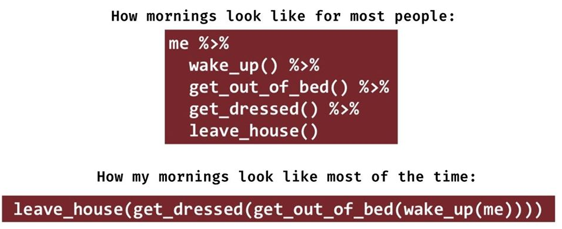
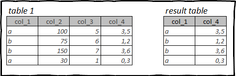
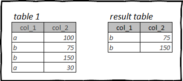
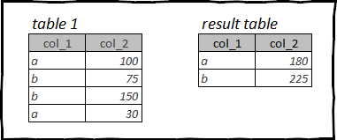
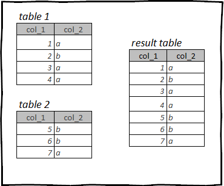
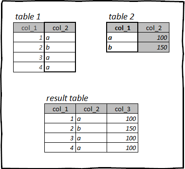
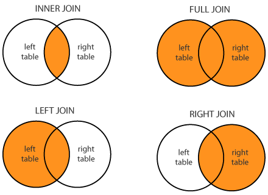
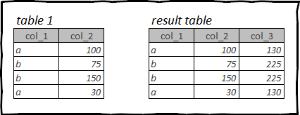

Какой язык выбрать для работы с данными — R или Python? Оба! Мигрируем с pandas на tidyverse и data.table и обратно

По запросу R или Python в интернете вы найдёте миллионы статей и километровых обсуждений по теме какой из них лучше, быстрее и удобнее для работы с данными. Но к сожалению особой пользы все эти статьи и споры не несут.
Изначально статья была написана для Хабра, и опубликована там же
Первоисточник: https://habr.com/ru/post/475210/
Цель этой статьи — сравнить основные приёмы обработки данных в наиболее популярных пакетах обоих языков. И помочь читателям максимально быстро овладеть тем, который они ещё не знают. Для тех кто пишет на Python узнать как выполнять всё то же самое в R, и соответственно наоборот.
В ходе статьи мы разберём синтаксис наиболее популярных пакетов на R. Это пакеты входящие в библиотеку tidyverse, а также пакет data.table. И сравним их синтаксис с pandas, наиболее популярным пакетом для анализа данных в Python.
Мы пошагово пройдём весь путь анализа данных от их загрузки до выполнения аналитических, оконных функций средствами Python и R.
Содержание
Данная статья может использоваться как шпаргалка, в случае если вы забыли как в одном из рассматриваемых пакетов выполнить некоторую операцию по обработке данных.
- Основные отличия синтаксиса в R и Python
1.1. Обращение к функциям пакетов
1.2. Присваивание
1.3. Индексация
1.4. Методы и ООП
1.5. Пайплайны
1.6. Структуры данных - Несколько слов о пакетах которые мы будем использовать
2.1. tidyverse
2.2. data.table
2.3. pandas - Установка пакетов
- Загрузка данных
- Создание датафреймов
- Выбор нужных столбцов
- Фильтрация строк
- Группировка и агрегация
- Вертикальное объединение таблиц (UNION)
- Горизонтальное объединение таблиц (JOIN)
- Простейшие оконные функции и вычисляемые столбцы
- Таблица соответствия методов обработки данных в R и Python
- Заключение
- Небольшой опрос о том какой пакет вы используете
Если вы интересуетесь анализом данных возможно вам будут полезны мои telegram и youtube каналы. Большая часть контента которых посвящены языку R.
Основные отличия синтаксиса в R и Python
Что бы вам было проще с переходом из Python к R, или наоборот, приведу несколько основных моментов, на которые необходимо обратить внимание.
Обращение к функциям пакетов
После загрузки пакета в R, для обращения к его функциям нет необходимости указывать имя пакета. В большинстве случаев в R это не принято, но допустимо. Вы вообще можете не импортировать пакет если в коде вам понадобится какая-либо одна его функция, а просто вызвать её указав название пакета и имя функции. Разделителем между названием пакета и функции в R служит двойное двоеточие package_name::function_name().
В Python наоборот, классикой считается обращение к функциям пакета, явно указав его имя. При загрузке пакета, как правило, ему присваивают сокращённое имя, например для pandas обычно используется псевдоним pd. Обращение к функции пакета идёт через точку package_name.function_name().
Присваивание
В R для присваивания значения объекту принято использовать стрелку obj_name <- value, хотя допускается и одинарный знак равенства, но одинарный знак равенства в R используют в основном для передачи значений аргументам функций.
В Python присваивание осуществляется исключительно одинарным знаком равенства obj_name = value.
Индексация
Тут тоже есть довольно весомые отличия. В R индексация начинается с единицы и включает в результирующий диапазон все указанные элементы,
в Python индексация начинается с нуля и выбираемый диапазон не включается последний элемент указанный в индексации. Так конструкция x[i:j] в Python не будет включать элемент j.
Также есть различия в отрицательной индексации, в R запись x[-1] вернёт все элементы вектора, кроме последнего. В Python аналогичная запись вернёт только последний элемент.
Методы и ООП
В R по своему реализовано ООП, об этом я писал в статье “ООП в языке R (часть 1): S3 классы”. В целом R функциональный язык, и всё в нём построено на функциях. Поэтому к примеру для пользователей Excel перейти на tydiverse будет проще, чем на pandas. Хотя возможно это моё субъективное мнение.
Если вкратце, то объекты в R не имеют методов (если говорить про S3 классы, но есть и другие реализации ООП, которые встречаются значительно реже). Есть лишь обобщённые функции, которые в зависимости от класса объекта по-разному их обрабатывают.
Пайплайны
Возможно это название для pandas будет не совсем корректно, но я попробую объяснить смысл.
Что бы не сохранять промежуточные вычисления и не плодить в рабочем окружении ненужные объекты вы можете использовать своеобразный конвейер. Т.е. передавать результат вычисления из одной функции в следующую, и не сохранять промежуточные результаты.
Возьмём следующий пример кода, в котором мы сохраняем в отдельные объекты промежуточные вычисления:
temp_object <- func1()
temp_object2 <- func2(temp_object )
obj <- func3(temp_object2 )
Мы последовательно выполнили 3 операции, и результат каждой сохранили в отдельный объект. Но на самом деле эти промежуточные объекты нам не нужны.
Либо ещё хуже, но привычнее пользователям Excel.
obj <- func3(func2(func1()))
В данном случае мы не сохраняли промежуточные результаты вычислений, но читать код с вложенными друг, в друга функциями крайне не удобно.
Мы будем рассматривать несколько подходов к обработке данных в R, и в них по разному выполняются подобные операции.
Пайплайны в библиотеке tidyverse реализуются оператором %>%.
obj <- func1() %>%
func2() %>%
func3()
Таким образом мы берём результат работы func1() и передаём его в качестве первого аргумента в func2(), далее результат этого вычисления передаём в качестве первого аргумента func3(). И в конце концов, все выполненные вычисления записываем в объект obj <-.
Лучше слов всё вышеописанное иллюстирирует этот мем:

В data.table похожим образом используются цепочки.
newDT <- DT[where, select|update|do, by][where, select|update|do, by][where, select|update|do, by]
В каждой из квадратных скобок вы можете использовать результат предыдущей операции.
В pandas такие операции разделяются точкой.
obj = df.fun1().fun2().fun3()
Т.е. мы берём нашу таблицу df и используем её метод fun1(), далее к полученному результату применяем метод fun2(), после fun3(). Полученный результат сохраняем в объект obj.
Структуры данных
Структуры данных в R и Python схожи, но имеют разные названия.
| Описание | Название в R | Название в Python / pandas |
|---|---|---|
| Табличная структура | data.frame, data.table, tibble | DataFrame |
| Одномерный список значений | Вектор | Series в pandas или список (list) в чистом Python |
| Многоуровневая не табличная структура | Список (List) | Словарь (dict) |
Некоторые другие особенности и различия синтаксиса мы рассмотрим далее.
Несколько слов о пакетах которые мы будем использовать
Для начала расскажу немного о пакетах с которыми в ходе этой статьи вы познакомитесь.
tidyverse
Официальный сайт: tidyverse.org
Библиотека tidyverse написана Хедли Викхемом, старшим научным сотрудником RStudio. tidyverse состоит из внушительного набора пакетов упрощающих обработку данных, 5 из которых входят в топ 10 загружаемых из репозитория CRAN.
Ядро библиотеки состоит из следующих пакетов: ggplot2, dplyr, tidyr, readr, purrr, tibble, stringr, forcats. Каждый из этих пакетов направлен на решение определённой задачи. Например dplyr создан для манипуляции с данными, tidyr для приведения данных к аккуратному виду, stringr упрощает работу со строками, а ggplot2 является одним из наиболее популярных инструментов для визуализации данных.
Преимуществом tidyverse является простота и легко читаемость синтаксиса, который во многом похож на язык запросов SQL.
data.table
Официальный сайт: r-datatable.com
Автором data.table является Мэтт Доул из H2O.ai.
Первый релиз библиотеки состоялся в 2006 году.
Синтаксис пакета не так удобен как в tidyverse и больше напоминает классические датафреймы в R, но при этом значительно расширенные по функционалу.
Все манипуляции с таблицей в данном пакете описываются в квадратных скобках, и если перевести синтаксис data.table на SQL, то получится примерно следующее: data.table[ WHERE, SELECT, GROUP BY ]
Сильной стороной данного пакета является скорость обработки больших объёмов данных.
pandas
Официальный сайт: pandas.pydata.org
Название библиотеки происходит от эконометрического термина «панельные данные» (англ. panel data), используемого для описания многомерных структурированных наборов информации.
Автором pandas является американец Уэс Мак-Кинни.
Когда речь идёт об анализе данных на Python, равных pandas нет. Очень многофункциональный, высокоуровневый пакет, который позволяет вам провести с данными любые манипуляции начиная от загрузки данных из любых источников до их визуализации.
Установка дополнительных пакетов
Пакеты о которых пойдёт речь в этой статье не входят в базовые дистрибутивы R и Python. Хотя есть небольшая оговорка, если вы установили дистрибутив Anaconda то ставить дополнительно pandas не требуется.
Установка пакетов в R
Если вы хотя бы раз открывали среду разработки RStudio наверняка вы и так уже знаете как установить нужный пакет в R. Для установки пакетов воспользуйтесь стандартной командой install.packages() запустив её непосредственно в самом R.
# установка пакетов
install.packages("vroom")
install.packages("readr")
install.packages("dplyr")
install.packages("data.table")
После установки пакеты необходимо подключить, для чего в большистве случаев используется команда library().
# подключение или импорт пакетов в рабочее окружение
library(vroom)
library(readr)
library(dplyr)
library(data.table)
Установка пакетов в Python
Итак, если у вас установлен чистый Python, то pandas вам необходимо доустанавливать руками. Открываем командную строку, или терминал, в зависимости от вашей операционной системы и вводим следующую команду.
pip install pandas
После чего возвращаемся в Python и импортируем установленный пакет командой import.
import pandas as pd
Загрузка данных
Добыча данных является одним из важнейших этапов анализа данных. И Python и R при желании предоставляют вам обширные возможности для получения данных из любых источников: локальные файлы, файлы из интернета, веб сайты, всевозможные базы данных.
В ходе статьи мы будем использовать несколько наборов данных:
- Две выгрузки из Google Analytics.
- Набор данных о пассажирах титаника.
Все данные лежат у меня на GitHub в виде csv и tsv файлов. От куда мы их и будем запрашивать.
Загрузка данных в R: tidyverse, vroom, readr
Для загрузки данных в библиотеке tidyverse предназначены два пакета: vroom, readr. vroom более современный, но в будущем возможно пакеты будут объединены.
Цитата из официальной документации vroom.
vroom vs readr
What does the release ofvroommean forreadr? For now we plan to let the two packages evolve separately, but likely we will unite the packages in the future. One disadvantage to vroom’s lazy reading is certain data problems can’t be reported up front, so how best to unify them requires some thought.vroom против readr
Что означает выпускvroomдляreadr? На данный момент мы планируем развивать оба пакета отдельно, но, вероятно, мы объединим их в будущем. Одним из недостатков ленивого чтенияvroomявляется то, что о некоторых проблемах с данными нельзя сообщить заранее, поэтому, необходимо подумать о том как лучше их объединить.
В этой статье мы рассмотрим оба пакета для загрузки данных:
Загрузка данных в R: пакет vroom
# install.packages("vroom")
library(vroom)
# Чтение данных
## vroom
ga_nov <- vroom("https://raw.githubusercontent.com/selesnow/publications/master/data_example/r_python_data/ga_nowember.csv")
ga_dec <- vroom("https://raw.githubusercontent.com/selesnow/publications/master/data_example/r_python_data/ga_december.csv")
titanic <- vroom("https://raw.githubusercontent.com/selesnow/publications/master/data_example/r_python_data/titanic.csv")
Загрузка данных в R: readr
# install.packages("readr")
library(readr)
# Чтение данных
## readr
ga_nov <- read_tsv("https://raw.githubusercontent.com/selesnow/publications/master/data_example/r_python_data/ga_nowember.csv")
ga_dec <- read_tsv("https://raw.githubusercontent.com/selesnow/publications/master/data_example/r_python_data/ga_december.csv")
titanic <- read_csv("https://raw.githubusercontent.com/selesnow/publications/master/data_example/r_python_data/titanic.csv")
В пакете vroom, не зависимо от формата данных csv / tsv загрузка осуществляется одноимённой функцией vroom(), в пакете readr мы используем под каждый формат свою функцию read_tsv() и read_csv().
Загрузка данных в R: data.table
В data.table для загрузки данных присутствует функция fread().
Загрузка данных в R: пакет data.table
# install.packages("data.table")
library(data.table)
## data.table
ga_nov <- fread("https://raw.githubusercontent.com/selesnow/publications/master/data_example/r_python_data/ga_nowember.csv")
ga_dec <- fread("https://raw.githubusercontent.com/selesnow/publications/master/data_example/r_python_data/ga_december.csv")
titanic <- fread("https://raw.githubusercontent.com/selesnow/publications/master/data_example/r_python_data/titanic.csv")
Загрузка данных в Python: pandas
Если сравнивать с R пакетами, то в данном случае наиболее близким по синтаксису к pandas будет readr, т.к. pandas умеет запрашивать данные от куда угодно, и в этом пакете присутствует целое семейство функций read_*().
read_csv()read_excel()read_sql()read_json()read_html()
И много других функций предназначенных для чтения данных из всевозможных форматов. Но для наших целей достаточно read_table() или read_csv() с использованием аргумента sep для указания разделителя столбцов.
Загрузка данных в Python: pandas
import pandas as pd
ga_nov = pd.read_csv("https://raw.githubusercontent.com/selesnow/publications/master/data_example/russian_text_in_r/ga_nowember.csv", sep = "\t")
ga_dec = pd.read_csv("https://raw.githubusercontent.com/selesnow/publications/master/data_example/russian_text_in_r/ga_december.csv", sep = "\t")
titanic = pd.read_csv("https://raw.githubusercontent.com/selesnow/publications/master/data_example/russian_text_in_r/titanic.csv")
Создание датафреймов
В таблице titanic, которую мы загрузили, есть поле Sex, в котором хранится идентификатор пола пассажира.
Но для более удобного представления данных в разрезе пола пассажира следует использовать не код пола, а название.
Для этого мы создадим небольшой справочник, таблицу в которой будет всего 2 столбца (код и название пола) и 2 строки соответственно.
Создание датафрейма в R: tidyverse, dplyr
В приведённом ниже примере кода мы создаём нужный датафрейм с помощью функции tibble() .
Создание датафрейма в R: dplyr
## dplyr
### создаём справочник
gender <- tibble(id = c(1, 2),
gender = c("female", "male"))
Создание датафрейма в R: data.table
Создание датафрейма в R: data.table
## data.table
### создаём справочник
gender <- data.table(id = c(1, 2),
gender = c("female", "male"))
Создание датафрейма в Python: pandas
В pandas создание фреймов осуществляется в несколько этапов, сперва мы создаём словарь, а потом преобразуем словарь в датафрейм.
Создание датафрейма в Python: pandas
# создаём дата фрейм
gender_dict = {'id': [1, 2],
'gender': ["female", "male"]}
# преобразуем словарь в датафрейм
gender = pd.DataFrame.from_dict(gender_dict)
Выбор столбцов
Таблицы с которыми вы работаете могут содержать десятки, и даже сотни столбцов с данными. Но для проведения анализа, как правило, вам нужны далеко не все столбцы которые доступны в исходной таблице.

Поэтому одной из первых операций которые вы будете выполнять с исходной таблицей, это очистка её от ненужной информации, и освобождение памяти которую эта информация занимает.
Выбор столбцов в R: tidyverse, dplyr
Синтаксис dplyr очень похож на язык запросов SQL, если вы с ним знакомы то довольно быстро овладеете этим пакетом.
Для выбора столбцов используется функция select().
Ниже примеры кода с помощью которого вы можете выбрать столбцы следующими способами:
- Перечислив названия нужных столбцов
- Обратиться к именам столбцов используя регулярные выражения
- По типу данных или любому другому свойству данных которые содержатся в столбце
Выбор столбцов в R: dplyr
# Выбор нужных столбцов
## dplyr
### выбрать по названию столбцов
select(ga_nov, date, source, sessions)
### исключь по названию столбцов
select(ga_nov, -medium, -bounces)
### выбрать по регулярному выражению, стобцы имена которых заканчиваются на s
select(ga_nov, matches("s$"))
### выбрать по условию, выбираем только целочисленные столбцы
select_if(ga_nov, is.integer)
Выбор столбцов в R: data.table
Те же операции в data.table выполняются несколько иначе, в начале статьи я привёл описание того, какие аргументы есть внутри квадратных скобок в data.table.
DT[i,j,by]
Где:
i — where, т.е. фильтрация по строкам
j — select|update|do, т.е. выбор столбцов и их преобразование
by — группировка данных
Выбор столбцов в R: data.table
## data.table
### выбрать по названию столбцов
ga_nov[ , .(date, source, sessions) ]
### исключь по названию столбцов
ga_nov[ , .SD, .SDcols = ! names(ga_nov) %like% "medium|bounces" ]
### выбрать по регулярному выражению
ga_nov[, .SD, .SDcols = patterns("s$")]
Переменная .SD позволяет вам обратиться ко всем столбцам, а .SDcols отфильтровать нужные столбцы используя регулярные выражения, или другие функции для фильтрации названий нужных вам столбцов.
Выбор столбцов в Python, pandas
Для выбора столбцов по названию в pandas достаточно передать список их названий. А для выбора или исключения столбцов по названию используя регулярные выражения необходимо использовать функции drop() и filter(), и аргумент axis=1, с помощью которого вы указываете, что обрабатывать надо не строки а столбцы.
Для выбора поля по типу данных используйте функцию select_dtypes(), и в аргументы include или exclude передайте список типов данных соответствующие тем, какие поля вам необходимо выбрать.
Выбор столбцов в Python: pandas
# Выбор полей по названию
ga_nov[['date', 'source', 'sessions']]
# Исключить по названию
ga_nov.drop(['medium', 'bounces'], axis=1)
# Выбрать по регулярному выражению
ga_nov.filter(regex="s$", axis=1)
# Выбрать числовые поля
ga_nov.select_dtypes(include=['number'])
# Выбрать текстовые поля
ga_nov.select_dtypes(include=['object'])
Фильтрация строк
Например, в исходной таблице могут храниться данные за несколько лет, а вам необходимо проанализировать только прошлый месяц. Опять же, лишние строки замедлят процесс обработки данных и будут засорять память ПК.

Фильтрация строк в R: tydyverse, dplyr
В dplyr для фильтрации строк используется функция filter(). В качестве первого аргумента она принимает датафрейм, далее вы перечисляете условия фильтрации.
При написании логических выражений для фильтрации таблицы в данном случае имена столбцов указываете без кавычек, и без объявления имени таблицы.
Применяя для фильтрации несколько логических выражений используйте следующие операторы:
- & или запятая — логическое И
- | — логическое ИЛИ
Фильтрация строк в R: dplyr
# фильтрация строк
## dplyr
### фильтрация строк по одному условию
filter(ga_nov, source == "google")
### фильтр по двум условиям соединённым логическим и
filter(ga_nov, source == "google" & sessions >= 10)
### фильтр по двум условиям соединённым логическим или
filter(ga_nov, source == "google" | sessions >= 10)
Фильтрация строк в R: data.table
Как я уже писал выше, в data.table синтаксис преобразования данных заключён в квадратные скобки.
DT[i,j,by]
Где:
i — where, т.е. фильтрация по строкам
j — select|update|do, т.е. выбор столбцов и их преобразование
by — группировка данных
Для фильтрации строк используется аргумент i, который имеет первую позицию в квадратных скобках.
Обращение к столбцам в логических выражениях осуществляется без кавычек и указания имени таблицы.
Логические выражения связываются между собой так же как и в dplyr через операторы & и |.
Фильтрация строк в R: data.table
## data.table
### фильтрация строк по одному условию
ga_nov[source == "google"]
### фильтр по двум условиям соединённым логическим и
ga_nov[source == "google" & sessions >= 10]
### фильтр по двум условиям соединённым логическим или
ga_nov[source == "google" | sessions >= 10]
Фильтрация строк в Python: pandas
Фильтрация по строкам в pandas схожа с фильтрацией в data.table, и осуществляется в квадратных скобках.
Обращение к столбцам в данном случае осуществляется обязательно с указанием имени датафрейма, далее название столбца можно так же указать в кавычках в квадратных скобках (пример df['col_name']), либо без кавычек после точки (пример df.col_name).
В случае, если вам необходимо отфильтровать датафрейм по нескольким условиям, каждое из условий необходимо взять в круглые скобки. Связываются между собой логический условия операторами & и |.
Фильтрация строк в Python: pandas
# Фильтрация строк таблицы
### фильтрация строк по одному условию
ga_nov[ ga_nov['source'] == "google" ]
### фильтр по двум условиям соединённым логическим и
ga_nov[(ga_nov['source'] == "google") & (ga_nov['sessions'] >= 10)]
### фильтр по двум условиям соединённым логическим или
ga_nov[(ga_nov['source'] == "google") | (ga_nov['sessions'] >= 10)]
Группировка и агрегация данных
Одна из наиболее часто используемых операций в анализе данных — группировка и агрегация.

Синтаксис для выполнения этих операций разрознен во всех рассматриваемых нами пакетах.
В данном случае в качестве примера мы возьмём датафрейм titanic, и посчитаем количество и среднюю стоимость билетов в зависимости от класса каюты.
Группировка и агрегация данных в R: tidyverse, dplyr
В dplyr для группировки используется функция group_by(), а для агрегации summarise(). На самом деле у dplyr есть целое семейство функций summarise_*(), но цель этой статьи сравнить базовый синтаксис, поэтому не будем лезть в такие дебри.
Основные агрегирующие функции:
sum()— суммированиеmin()/max()— минимальное и максимальное значениеmean()— среднее арифметическоеmedian()— медианаlength()— количество
Группировка и агрегация в R: dplyr
## dplyr
### группировка и агрегация строк
group_by(titanic, Pclass) %>%
summarise(passangers = length(PassengerId),
avg_price = mean(Fare))
В функцию group_by() в качестве первого аргумента мы передали таблицу titanic, и далее указали поле Pclass, по которому мы будем группировать нашу таблицу. Результат этой операции с помощью оператора %>% передали в качестве первого аргумента в функцию summarise(), и добавили ещё 2 поля: passangers и avg_price. В первом, используя функцию length() рассчитали количество билетов, а во втором с помощью функции mean() получили среднюю стоимость билета.
Группировка и агрегация данных в R: data.table
В data.table для агрегации служит аргумент j который имеет вторую позицию в квадратных скобках, а для группировки by или keyby, которые имеют третью позицию.
Список агрегирующих функций в данном случае идентичен описанному в dplyr, т.к. это функции из базового синтаксиса R.
Группировка и агрегация в R: data.table
## data.table
### фильтрация строк по одному условию
titanic[, .(passangers = length(PassengerId),
avg_price = mean(Fare)),
by = Pclass]
Группировка и агрегация данных в Python: pandas
Группировка в pandas схожа с dplyr, а вот агрегация не похожа ни на dplyr ни на data.table.
Для группировки используйте метод groupby(), в который необходимо передать список столбцов, по которым будет сгруппирован датафрейм.
Для агрегации можно использовать метод agg(), который принимает словарь. Ключами словаря являются столбцы к которым вы будете применять агрегирующие функции, а значениями будут имена агрегирующих функций.
Агрегирующие функции:
sum()— суммированиеmin()/max()— минимальное и максимальное значениеmean()— среднее арифметическоеmedian()— медианаcount()— количество
Функция reset_index() в примере ниже используется для того, что бы сбросить вложенные индексы, которые pandas по умолчанию устанавливает после агрегации данных.
Символ \ позволяет вам переходить на следующую строку.
Группировка и агрегация в Python: pandas
# группировка и агрегация данных
titanic.groupby(["Pclass"]).\
agg({'PassengerId': 'count', 'Fare': 'mean'}).\
reset_index()
Вертикальное объединение таблиц
Операция, при которой вы объединяете две или более таблиц одинаковой структуры. В загруженных нами данными есть таблицы ga_nov и ga_dec. Эти таблицы одинаковы по структуре, т.е. имеют одинаковые столбцы, и типы данных в этих столбцах.

Это выгрузка из Google Analytics за ноябрь и декабрь месяц, в этом разделе мы объедим эти данные в одну таблицу.
Вертикальное объединение таблиц в R: tidyverse, dplyr
В dplyr объединить 2 таблицы в одну можно с помощью функции bind_rows(), передав в качестве её аргументов таблицы.
Фильтрация строк в R: dplyr
# Вертикальное объединение таблиц
## dplyr
bind_rows(ga_nov, ga_dec)
Вертикальное объединение таблиц в R: data.table
Так же ничего сложного, используем rbind().
Фильтрация строк в R: data.table
## data.table
rbind(ga_nov, ga_dec)
Вертикальное объединение таблиц в Python: pandas
В pandas для объединения таблиц служит функция concat(), в которую необходимо передать список фреймов для их объединения.
Фильтрация строк в Python: pandas
# вертикальное объединение таблиц
pd.concat([ga_nov, ga_dec])
Горизонтальное объединение таблиц
Операция при которой, к первой таблице добавляются столбцы из второй по ключу. Зачастую используется при обогащении таблицы фактов (например таблице с данными о продажах), некоторыми справочными данными (например стоимостью товара).

Есть несколько типов объединения:

В загруженной ранее таблице titanic у нас имеется столбец Sex, который соответствует коду пола пассажира:
1 — женский
2 — мужской
Также, мы с вами создали таблицу — справочник gender. Для более удобного представления данных по полу пассажиров нам необходимо добавить название пола, из справочника gender в таблицу titanic.
Горизонтальное объединение таблиц в R: tidyverse, dplyr
В dplyr для горизонтального объединения присутствует целое семейство функций:
inner_join()left_join()right_join()full_join()semi_join()nest_join()anti_join()
Наиболее часто используемой в моей практике является left_join().
В качестве первых двух аргументов перечисленные выше функцию принимают две таблицы для объединения, а в качестве третьего аргумента by необходимо указать столбцы для объединения.
Горизонтальное объединение таблиц в R: dplyr
# объединяем таблицы
left_join(titanic, gender,
by = c("Sex" = "id"))
Горизонтальное объединение таблиц в R: data.table
В data.table объединять таблицы по ключу необходимо с помощью функции merge().
Аргументы функции merge() в data.table
- x, y — Таблицы для объелинения
- by — Столбец, который является ключом для объединения, если в обеих таблицах он имеет одинаковое название
- by.x, by.y — Имена столбцов для объединения, в случае если в таблицах они имеют разное название
- all, all.x, all.y — Тип соединения, all вернёт все строки из обеих таблиц, all.x соответствует операции LEFT JOIN (оставит все строки первой таблицы), all.y — соответствует операции RIGHT JOIN (оставит все строки второй таблицы).
Горизонтальное объединение таблиц в R: data.table
# объединяем таблицы
merge(titanic, gender, by.x = "Sex", by.y = "id", all.x = T)
Горизонтальное объединение таблиц в Python: pandas
Так же как и в data.table, в pandas для объединения таблиц используется функция merge().
Аргументы функции merge() в pandas
- how — Тип соединения: left, right, outer, inner
- on — Столбец, который является ключом, в случае если имеет одинаковое название в обеих таблицах
- left_on, right_on — Имена столбцов ключей, в случае если они имеют разные имена в таблицах
Горизонтальное объединение таблиц в Python: pandas
# объединяем по ключу
titanic.merge(gender, how = "left", left_on = "Sex", right_on = "id")
Простейшие оконные функции и вычисляемые столбцы
Оконные функции по смыслу похожи на агрегирующие, и так же часто используются в анализе данных. Но в отличие от агрегирующих функций, оконные не меняют количество строк исходящего датафрейма.

По сути с помощью оконных функцию мы разбиваем входящий датафрейм на части по какому-то признаку, т.е. по значению поля, или нескольких полей. И проводим над каждым окном арифметические операции. Результат этих операций будет возвращён в каждую строку, т.е. не изменяя общего количества строк в таблице.
Для примера возьмём таблицу titanic. Мы можем посчитать какой процент составила стоимость каждого билета в рамках его класса кают.
Для этого нам необходимо в каждой строке получить общую стоимость билета по текущему классу кают, к которому относится билет в данной строке, потом разделить стоимость каждого билета на общую стоимость всех билетов этого же класса кают.
Оконные функции в R: tidyverse, dplyr
Для добавления новых столбцов, без применения группировки строк, в dplyr служит функция mutate().
Решить описанную выше задачу можно сгруппировав данные по полю Pclass и просуммировав в новом столбце поле Fare. Далее разгруппировываем таблицу и делим значения поля Fare на то, что получилось в прошлом шаге.
Оконные функции в R: dplyr
group_by(titanic, Pclass) %>%
mutate(Pclass_cost = sum(Fare)) %>%
ungroup() %>%
mutate(ticket_fare_rate = Fare / Pclass_cost)
Оконные функции в R: data.table
Алгоритм решения остаётся такой же, как в dplyr, нам необходимо разбить таблицу на окна по полю Pclass. Вывести в новом столбце сумму по соответствующей каждой строке группе, и добавить столбец в котором мы рассчитаем долю стоимости каждого билета в его группе.
Для добавления новых столбцов в data.table присутствует оператор :=. Ниже приведён пример решения задачи с помощью пакета data.table
Оконные функции в R: data.table
titanic[,c("Pclass_cost","ticket_fare_rate") := .(sum(Fare), Fare / Pclass_cost),
by = Pclass]
Оконные функции в Python: pandas
Один из способов добавить новый столбец в pandas — использовать функцию assign(). Для суммирования стоимости билетов по классу кают, без группировки строк мы будем использовать функцию transform().
Ниже пример решения, в котором мы добавляем в таблицу titanic те же 2 столбца.
Оконные функции в Python: pandas
titanic.assign(Pclass_cost = titanic.groupby('Pclass').Fare.transform(sum),
ticket_fare_rate = lambda x: x['Fare'] / x['Pclass_cost'])
Таблица соответствия функций и методов
Далее привожу таблицу соответствия методов для выполнения различных операций с данными в рассмотренных нами пакетах.
| Описание | tidyverse | data.table | pandas |
|---|---|---|---|
| Загрузка данных | vroom()/ readr::read_csv() / readr::read_tsv() |
fread() |
read_csv() |
| Создание датафреймов | tibble() |
data.table() |
dict() + from_dict() |
| Выбор столбцов | select() |
аргумент j, вторая позиция в квадратных скобках | передаём список нужных столбцов в квадратных скобках / drop() / filter() / select_dtypes() |
| Фильтрация строк | filter() |
аргумент i, первая позиция в квадратных скобках | перечисляем условия фильтрации в квадратных скобках / filter() |
| Группировка и агрегация | group_by() + summarise() |
аргументы j + by | groupby() + agg() |
| Вертикальное объединение таблиц (UNION) | bind_rows() |
rbind() |
concat() |
| Горизонтальное объединение таблиц (JOIN) | left_join() / *_join() |
merge() |
merge() |
| Простейшие оконные функции и добавление рассчитываемых столбцов | group_by() + mutate() |
аргумент j с использованием оператора := + аргумент by |
transform() + assign() |
Заключение
Возможно в статье я описал не самые оптимальные реализации обработки данных, поэтому буду рад если исправите мои ошибки в комментариях, или же просто дополните приведённую в статье информацию другими приёмами работы с данными в R / Python.
Как я уже писал выше, цель статьи заключась не в том, что бы навязывать своё мнение о том, какой из языков лучше, а упростить возможность изучить оба языка, либо по необходимости мигрировать между ними.
Если вам понравилась статья буду рад новым подписчикам на моих youtube и телеграм каналах.